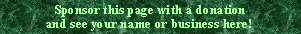

|
Divinare Italian? |  |
Audsley lists this stop with the following description and footnotes:
The somewhat inappropriate term used to designate a covered stop of 4 ft. pitch, belonging to the Covered Flutework, the tone of which is singularly soft and singing. Such a stop is very desirable in the Choir of a Church Organ, in a Chamber Organ, and in the Echo or Ancillary Aerial Organ of a Concert-Room instrument. Its presence would be productive of many charming effects in refined registration. The stop is made of both wood and metal: when of wood, the pipes are of small scale, and made narrow and deep so as to secure small mouths. Low-pressure wind is desirable.�Divinare, flûte de bourdon de quatre-pieds, flûte divine, est une singulière traduction de ce mot, et c'est la seule indiquée pour exprimer la qualité divinement supérieure de cette flûte . . . à peu près inconnue.� -- Regnier.
�Divinare (vom Lat. divinus, göttlich), sondern es gedecktes Flötenwerk zu 4'. Die Intonation dieser Stimme muss dem Namen nach sehr schön sein.� -- Seidel.
The footnotes translate roughly as follows:
�Divinare, a 4' bourdon, divine flute, is a singular translation of this word, and it is only indicated to express the divinely superior quality of this flute . . . nearly unknown.� -- Regnier.
�Divinare (from the Latin divinus: godlike), on the contrary is a stopped 4' flute. The intonation of this voice must, by its name, be very beautiful.� -- Seidel.
Wedgwood also lists this stop, but merely quotes Seidel. The Italian word divinare means �to divine�.
Divinare 4', Celestial; Holy Trinity Lutheran Church, Buffalo, New York, USA; Moller 1986.
Divinare 4', Positiv; Passau Cathedral, Bavaria, Germany; Steinmeyer 1924.
|
Original site compiled by Edward L. Stauff. For educational use only. Divinare.html - Last updated 4 October 2000. |
Home Full Index |